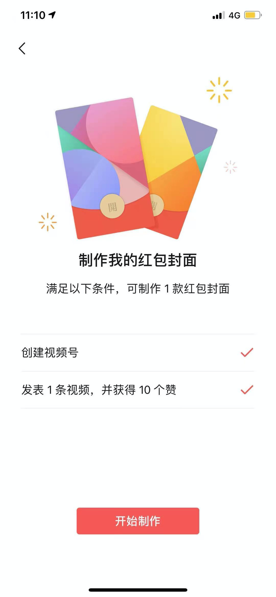
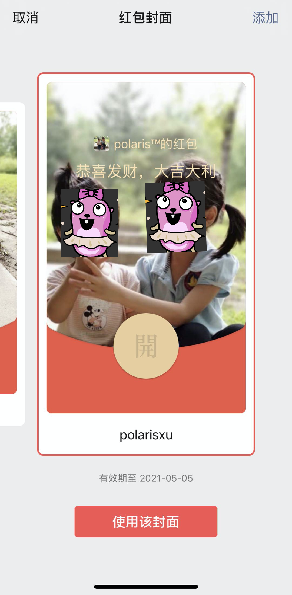
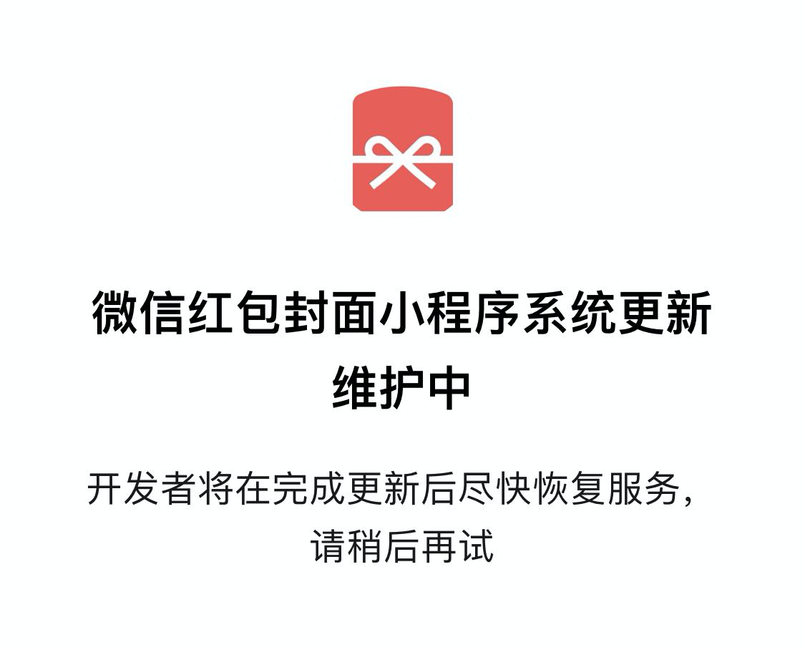

微信支持个人免费制作红包封面了：不过跟 clubhouse 一样，只能 iOS
大家好，我是站长 polarisxu。
01
这段时间，我隐约感觉 iOS 用户各种“晒”，而 Android 用户一脸懵逼，总感觉不是一个圈子的。以下两件事特别明显：
- 微信 8.0 发布时，iOS 用户炸弹玩得飞起，Android 用户只能弱弱的问：这是怎么弄的？几天之后，Android 用户才有。
- 嘿，你有 clubhouse 邀请码吗？这些天 clubhouse 真是火的不要不要的，各种互助群。邀请码太难搞，但即使有办法搞到邀请码，如果你不是 iOS 用户，抱歉，暂时没法用，因为 clubhouse 还没有 Android APP。
好家伙，你们这不是“鄙视” Android 用户吗？！气~
今天我特意了解了下，为什么类似微信或一些新的 APP 喜欢优先在 iOS 平台发布。我认为有如下一些原因。
1、Android 开发、适配难度大
iOS 是苹果垄断的，机型比较少，开发、测试、适配相对都更容易。而 Android 市场，各大手机厂商都喜欢“深度”定制系统，机型千差万别，开发、测试、适配都相对比较费劲。而且，一般设计师们在设计时，也是按照 iOS 标准来进行，对 Android，有必要时才进行适当调整。
所以，iOS 相当于公测，在 iOS 上的功能体验，能够更好的保持一致。iOS 没问题了，Android 才会跟上，甚至有时候一些功能 iOS 试用后不合适，可能会去掉，Android 用户可能就用不到被下掉的功能了。
2、审核机制
AppStore 的审核机制是出了名的严格，小到一个图标的尺寸，大到开发者的资质，都是它审查的方向。而且，一般 iOS 的审核时间比较长，短则一三五天，长则可能需要半个月左右，所以一般会提前送审 iOS 版本。
而 Android 市场几乎没有太多审核，而且有些更新，是通过应用内进行，根本不需要经过应用市场，所以时间更可控。
比如王者荣耀，应该是优先提交 iOS 审核，审核通过了，才会进行两大平台的发布，这样可以更好的控制发布时间。
3、用户群和生态
大家一般认为，iOS 和 Android 的用户群体还是不太一样的，iOS 可以更好的打出知名度。同时，iOS 上，似乎付费更多，生态、用户群和习惯，导致不少应用喜欢在 iOS 上首发。
另外，iOS 都是通过 AppStore 来控制，而且 iOS 应用升级机制做的也更好，优先 iOS，控制升级，还是废弃特定新功能的版本都更容易些，而 Android 可控性较差。
你认为还有什么原因？
02
“瓜”又来了，有些人应该听说过微信红包封面，我之前想过弄一套 Go 语言中文网的，但门槛不低，而且一个要 1 块钱，如果我想让 1000 个人领红包封面，得 1000 块钱，成本不低。
今天看到有人分享了一个小程序，腾讯发布的，叫：微信红包封面，如下图。

从要求看，这是继续推广视频号。只要你有视频号，同时发表过一个视频并获得 10 个赞，就可以制作 1 款红包封面，要求还是很低的，制作也很方便，制作完成后可以预览效果，还允许修改一次。如果你还没有注册视频号，可以注册一个。
和这个公众号对应的视频号欢迎关注：polarisxu。
然而，这个小程序要求微信版本是 8.0.2，iOS 已经发布了该版本，但 Android 并未发布，因此 Android 用户无法使用，进入该小程序会提示让升级到最新版本。
在制作红包封面时，需要上传一张封面图，然后可以放一个你视频号中的视频。因为我这个视频号是我个人的，内容会更随意些，做了一个红包封面，是免费的，一共 10 个（可以送给 10 个人）。不过不适合分享给大家，截图让大家看下。

03
当我准备使用 Go 语言中文网制作一个 Gopher 专用红包封面时，发现没法使用了，应该是官方在做一些调整。我会时刻关注着，恢复了会做一个 Gopher 的，到时候分享出来。

注意：这个小程序目前好像搜索不到，只能分享。如果需要，可以加我微信（微信号：gopherstudio），我分享给大家，当可以使用时，方便制作一个自己的红包封面。
最后，注册了 clubhouse 的，欢迎 follow 我：polarisxu，别问我要邀请码，用完了。感兴趣的加我微信进互助群倒是可以的。